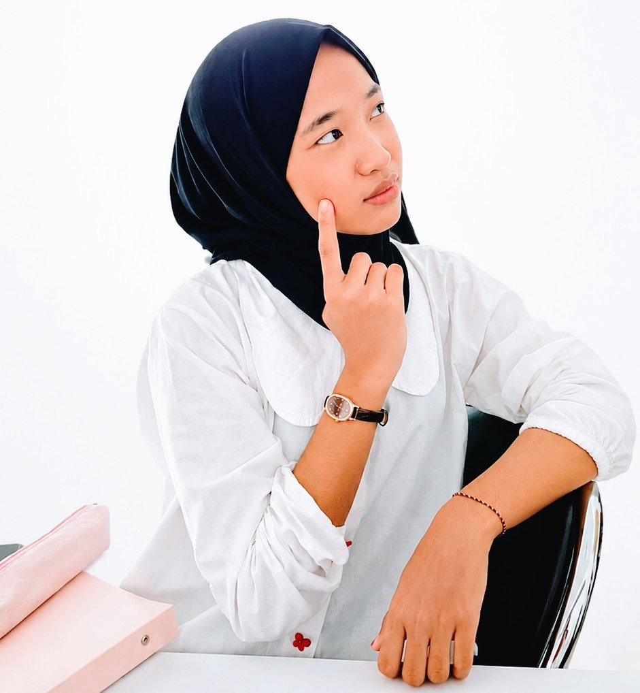

Kuasai Ilmu Hukum Waris Islam
Secara Interaktif
Selamat datang di Website Hukum Waris Islam. Website ini menyediakan informasi dan edukasi mengenai pembagian harta warisan berdasarkan syariat Islam.

Media Edukasi Hukum Waris Islam
Website ini dibuat sebagai media edukasi untuk meningkatkan pemahaman masyarakat mengenai hukum waris Islam. Informasi yang disajikan bertujuan membantu masyarakat memahami hak dan kewajiban ahli waris serta pentingnya pembagian warisan sesuai syariat Islam.
Jadi, Apa sih Hukum Warisan Islam itu?
- ✓ Siapa saja yang berhak menerima warisan?
- ✓ Berapa bagian masing-masing ahli waris?
- ✓ Apa yang menjadi penghalang waris?

Kurikulum Interaktif Faraidh
Simulasi kasus nyata + 5 modul inti yang dapat diperluas.
Bacaan Lengkap Hukum Waris Islam
8 artikel terstruktur untuk pemahaman mendalam.
Tentang Saya& Kontak
Informasi mengenai profil, visi dan misi, serta kontak yang dapat Anda hubungi.

Aisha Nurzahra
Program Studi:
S1 Hukum Keluarga Islam
Institusi:
IAIN Datuk Laksemana Bengkalis
Visi
Menjadi platform edukasi digital terdepan yang mentransformasikan pembelajaran Hukum Waris Islam menjadi lebih mudah, interaktif, dan aksesibel bagi generasi muda serta masyarakat luas.
Misi
Menyederhanakan kompleksitas hukum waris Islam melalui modul visual, guna meningkatkan literasi masyarakat sekaligus mencegah potensi sengketa keluarga melalui pendekatan teknologi yang ramah pengguna.
.png)